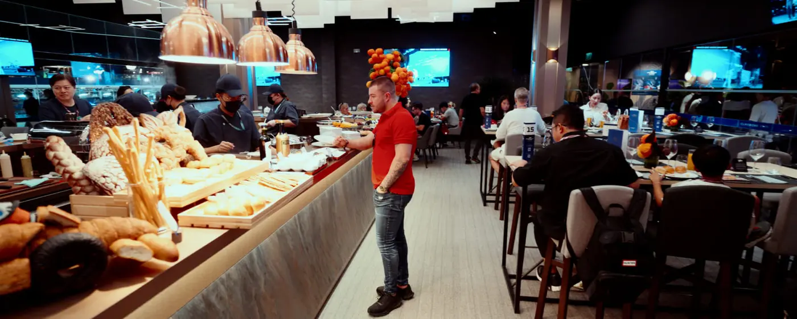
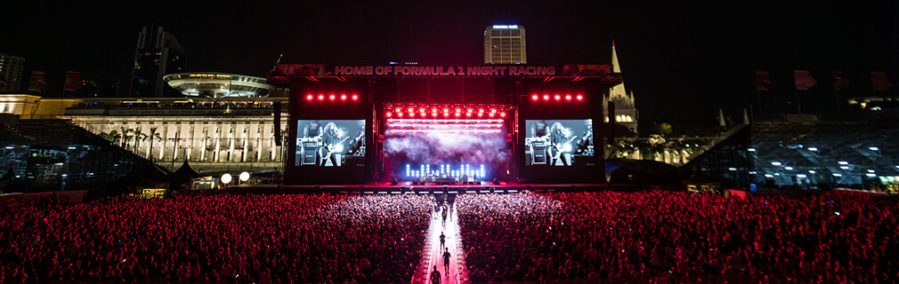
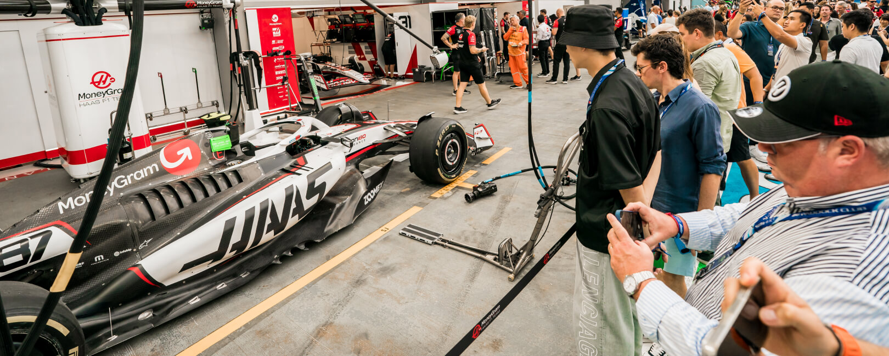
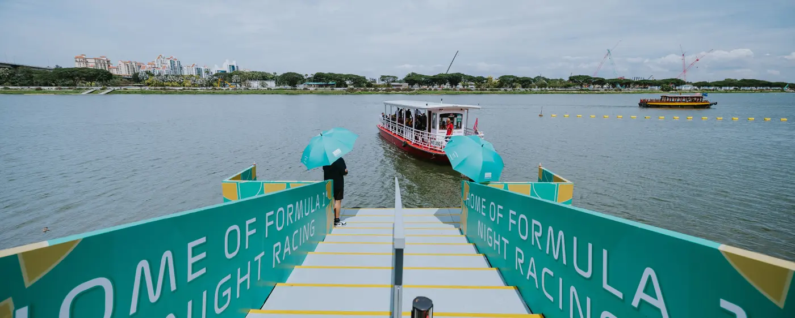
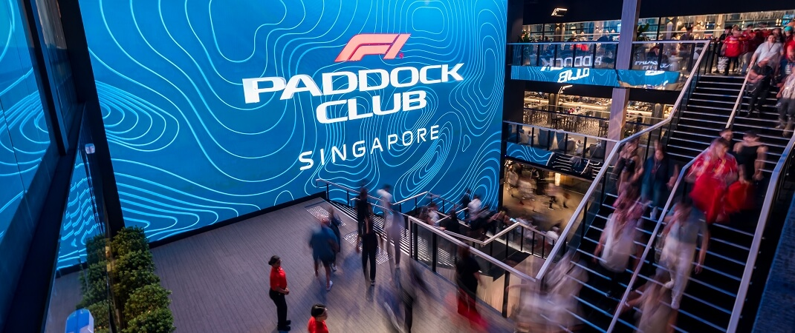

DINING & BARS
餐廳、酒吧與整晚餐飲
各方案皆有自己的餐飲規格；Paddock Club™ 設有 Atrium 餐廳與特色酒吧， TWENTY3 則以可看見最後一彎的特色餐廳為核心。
主要畫面：PADDOCK CLUB™
KNOW WHERE YOU WILL BE
10 個 Hospitality 方案分布在主直線、一至三號彎、Zone 4、 Singapore Flyer 與最後一彎。以下把包廂內部、露臺／看台與鄰近設施放在一起， 先確認位置關係，再比較實際體驗。
查看各方案內容BEYOND THE SUITE
餐飲、娛樂與特別通行權益會依方案不同。

DINING & BARS
各方案皆有自己的餐飲規格；Paddock Club™ 設有 Atrium 餐廳與特色酒吧， TWENTY3 則以可看見最後一彎的特色餐廳為核心。
主要畫面：PADDOCK CLUB™

LIVE ENTERTAINMENT
Driver's Right Lounge 位於 Zone 4，官方標示至 Padang 主舞台約步行 10 分鐘； 其他方案的舞台通行範圍須依票權確認。
最近：DRIVER'S RIGHT LOUNGE

PIT LANE WALK
Formula 1 Paddock Club™ 包含每日指定時段 Pit Lane Walk； 這是特定方案權益，不能視為所有 Hospitality 票券皆包含。
限定：PADDOCK CLUB™

ARRIVAL & LIFESTYLE
TWENTY3 包含往返渡輪；Singapore Flyer 區的方案則鄰近專屬看台、 雞尾酒吧、DJ 與互動活動所在的 Lifestyle Area。
TWENTY3 · VISTA · SKY VIEW · TORQUE
包廂／露臺可直接看見賽道
Lounge 無直接視野，需移步專屬看台
同區方案代表位置相近，不代表設施或票權可以互通。
圖片為 Singapore GP 官方過往活動示意。2026 實際包廂配置、餐飲、服務、 活動及觀景安排可能調整；各項權益以所選方案官方說明與預訂時確認內容為準。

01 PIT BUILDING
QUICK COMPARE
手機可左右滑動表格
| 方案 | 位置 | 主要視角 | 體驗重點 | 選擇方案 |
|---|
THREE NIGHTS, ONE COMPLETE STORY
FRI 10.09
在練習賽中掌握各區視野、場內動線與餐飲節奏。
SAT 10.10
排位賽把每個彎角推到極限，也決定決賽起跑布局。
SUN 10.11
從策略、進站到終點慶典，完成新加坡夜間賽週末。
賽事及旅遊行程內容請以福泰旅遊頁面與預訂時確認資訊為準。